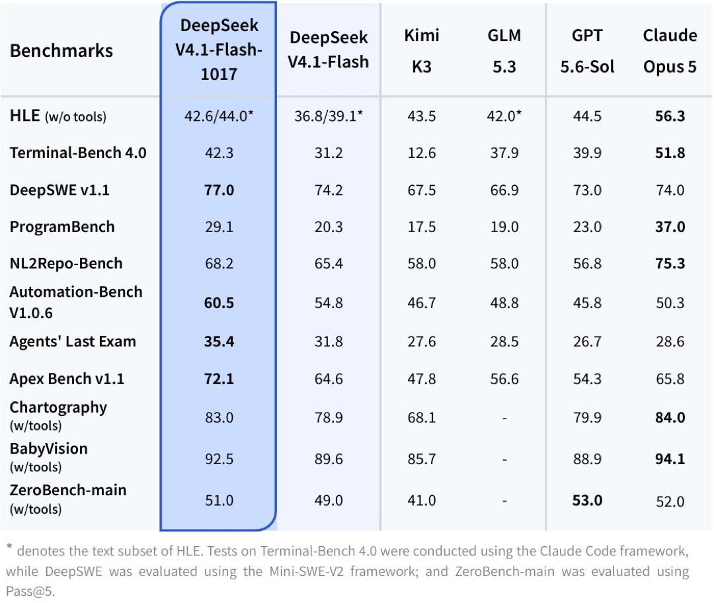
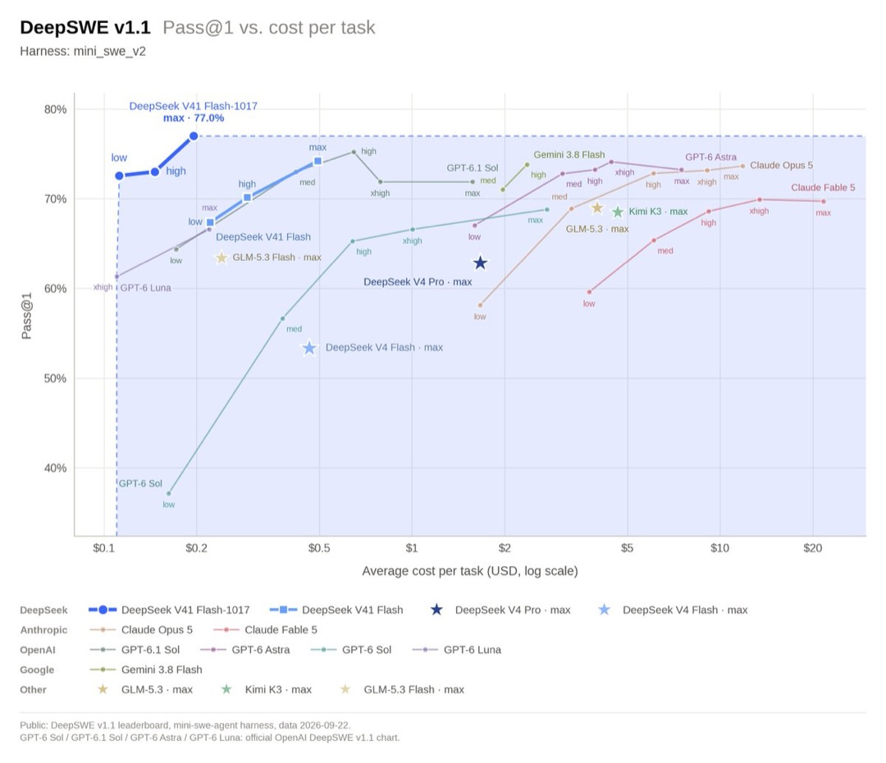
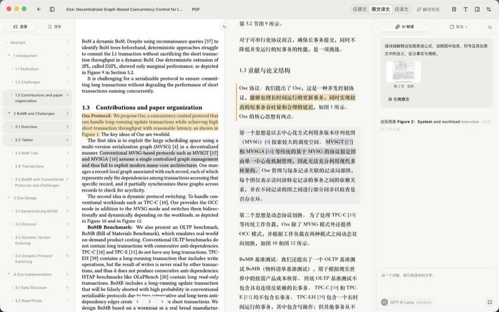
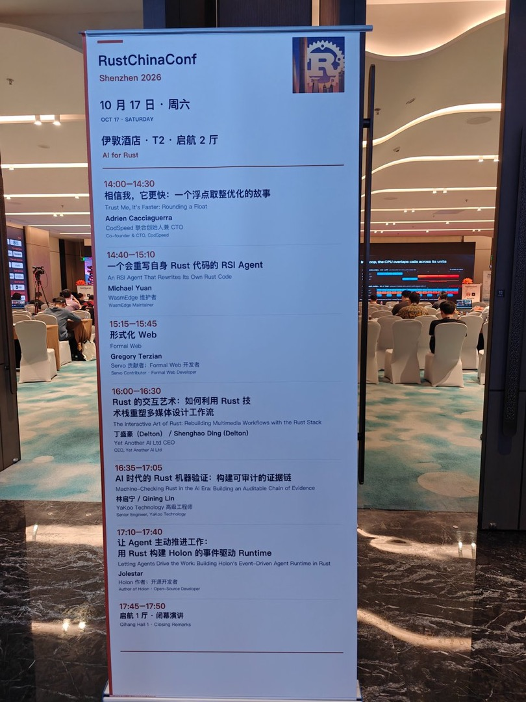

本期速览
01 FDE降本增效商业模式难成立
03 Claude Code搭建个人Agent
04 DeepSeek Flash版本性能提升
05 用AI前先搜GitHub找现成方案
07 Rust高门槛成长期工程PoW
01｜FDE降本增效商业模式难成立
来源（X） · @jinchenma_ai · 2026-10-17 15:37
FDE 其实只是一个载体，或者说只是一个名词热点。
而企业想要用上 AI，这个需求是真实的，而且会一直存在。至于现阶段怎么让企业用上 AI，国内所谓的 FDE 和 Palantir 对这个概念的定义实际上不一样。
直接下场帮老板解决裁员问题，是非常非常非常不建议的做法。交付困难，而且最大的阻力就是人性。
企业想要用上 AI，培训其实是一个非常好的切口，因为现在更多的还是认知问题。
另外也推荐一下曲率出逃的账号，讲得很中肯。
引用内容
曲率出逃 @Daklnl
但是我们摸爬滚打半年下来，一个基本的判断：
大部分FDE就是伪命题。
理由是我们接触下来80%的企业，对AI的认知和需求，都是降本增效。
而降本增效90%≈裁员
因为所谓的「提效」，说白了就是原本3小时干的活儿，现在用了AI1小时干完了。
然后呢？
打工人的核心价值，就是通过卖时间来换钱，所以你最关心的是两个因素，一个是工资收入，一个是工作时间。
你的工资会发生变化吗？
不会。
你的工作量会跟着增加吗？
会。
因为你省出来的2小时，公司肯定不想浪费啊，每个月给你发这么多工资，不是让你来摸鱼躺平的。
公司不是家，老板不是妈。
我自己当老板之后，就深有体会。
只要你对员工足够好，那么他并不会感激你，反而会得寸进尺，今天说办公室的椅子不舒服，明天说自己拿到的提成绩效太少了。
你问他，你想要更多的钱，那你贡献的价值有多少呢？
说不出来，但就是觉得自己拿到的太少了。
可是你放眼望去，你给他的其实比市场均值要高，人永远是欲求不满的。
如果老板不冷酷，那么员工就会摸你的底线。
劳资关系天然就是很难在同一战线的，也可以说它就是对立的。
你只能定好规矩和机制，用制度来权衡人性。
但是屁股决定脑袋，在劳动和薪酬这件事情上，老板和员工不可能是完全的利益共同体。
所以你会发现，你省出来的2小时，公司的工作大概率会给你排满。
短期内，你作为员工可以对抗AI，反蒸馏，用各种理由说你的活儿是AI干不了的。
但长期来看，你会落后于市场均值，别人用AI都能1个小时干完，就你一个人要干3小时，那你离职去下一家吧。
就算时间节省出来了，也会有一个问题，就是你这个岗位，其实没这么多活儿，你把时间省出来，真就摸鱼了。
老板不可能容忍你长时间摸鱼啊，所以假设一个岗位有3个人，现在每个人每天8小时的时间，都省出来2小时，合计省出来6小时的工作量。
那么老板一定会选择，让另外两个人用AI，裁掉一个人，再给他们额外增加1小时工作量。
成本就下来了，人也下来了，员工短时间内会痛苦，但很快也会适应的，因为他不适应就换下一个能适应的了。
所以提效的终局，还是裁员。
那么问题来了：
如果FDE把降本增效，作为你的核心业务，这门生意成立吗？
所有生意成立的前提，就是投入产出比，ROI能算得过来。
而且需要你（乙方）和客户（甲方）的ROI都同时算得过来。
怎么算呢？
以我们的其中一个客户举例，他们要裁掉10个人，周期大概需要3个月。
对于FDE（乙方）来说，你至少需要投进去1-2个人，他的时间和脑力，还有差旅成本，大概是2-3万/月。
你多少还得赚点吧？如果按成本定价，那你的底价就是15-20万。
对于客户（甲方）来说，平均每个人的薪资成本在2-3万/月，这10个人每个月的成本就是30万，3个月下来就节省了90万。
但是裁掉这10个人之后，为了保证公司正常运转，需要给部门里另外50个人，每个人配500-1500元不等的API费用，成本又增加了5万/月。
这个时候，你会发现，3个月下来，客户实际能节省的成本，大概是20万/月。
这个时候你报价10万/月，3个月下来30万，那么FDE是赚的，客户也是赚的。
因为他每个月只需要付出10万块，就能省下来20万，为什么不呢？
但问题来了，这个逻辑能成立的前提是什么？
是这个客户的人力成本足够高，基本上要到大型集团、上市公司的体量。
他们一个部门，一个月的人力成本，能有200万-300万。
这样的公司，全国不超过1万家。
但是现在市面上的FDE，都快超过10万家了，还在持续增长。
僧多肉少，而且不是谁都有这个级别的客户资源，也不是每个FDE团队都有能力解决这个水平的问题。
大部分公司，你累死累活，给人提效30%，省出来的钱还不到1万块。
这个时候你做的是陪跑，你的单价是不会低于3万/月的。
所以客户一定会问，我给你花了3万块，你怎么就给我解决了1万块的问题？
你回答不了，这个客户就一定会流失，你的口碑也会崩塌。
要么就是客户只愿意给你1万/月，你要给人当3个月黑奴，这跟打工又有啥区别？
或者从一开始，这个合同就不可能签下来，因为客户一算账就觉得不对。
那么这个时候，你就只能给人卖SaaS标品，做WorkBuddy、千问办公、豆包工作的代理。
但是，人家大厂的代理，是需要资质的，你没有1年注册时间，100万注册资金，3-6万保证金，你还没有资格成为代理商。
除非你做二级代理。
要么你就卖token，但如果你卖中转站的token，就是对客户不负责。
你卖云厂商的token，也是需要资质的，每个月消耗低于5万块、10万块，你是拿不到低折扣token的，客户还不如自己买官方API Key，那你就赚不到这笔钱。
实在不行，就卖企业培训，但现在企业的培训预算，越来越少了，而且很多企业不需要培训，他需要你直接帮他解决问题。
但你帮他解决问题，这笔账算不过来，ROI打不正，要不就是你亏，要不就是客户亏。
那么这个生意就基本不成立。
所以还有一个方向，是用AI给企业做「增长」。
字数不够了，下一篇帖子展开讲。
02｜Nivo一键清理Mac存储空间
来源（X） · @JohnnyTabaie · 2026-10-16 21:01
中文译文
Xcode 占了 40 GB？Docker 又占了 20 GB？Homebrew 还在继续添加？😅
这就是 Nivo 的用武之地。
找出占满你 Mac 的罪魁祸首，清除不必要的文件，管理应用，重新夺回存储空间。
Xcode、Docker、Homebrew、下载文件，等等。
全部集成在一个原生 macOS 应用中。
原文
Xcode taking up 40 GB? Docker another 20 GB? And Homebrew adding even more? 😅
That's where Nivo comes in.
Find what's filling up your Mac, clear unnecessary files, manage apps, and reclaim storage.
Xcode, Docker, Homebrew, downloads, and etc.
All in one native macOS app.
03｜Claude Code搭建个人Agent
来源（X） · @gengdaJ · 2026-10-17 14:32
1、微信数据打通：https://github.com/mcncarl/yichen-skills/tree/main/yichen-wecom-local-vault
2、企微数据打通：https://github.com/mcncarl/yichen-skills/tree/main/yichen-wecom-local-vault
3、飞书：飞书CLI
4、Gmail、Slack、Lark：对应的插件
5、电脑所有操作记录：Codex History
6、重要线下会议分享和对话：千问App和豆包App录音（录音豆/录音笔录音），用豆包ASR或Step ASR进行文字转化成Markdown
7、X书签、小红书收藏和抖音收藏打通：https://github.com/mcncarl/yichen-skills/tree/main/yichen-bookmarks-export
8、所有和Codex、Claude Code的聊天记录，自动沉淀成Markdown：https://github.com/mcncarl/agent-memory-vault
引用内容
晓辉博士 @xiaohuiyuan
04｜DeepSeek Flash版本性能提升
来源（X） · @deepseek_ai · 2026-10-17 16:35
中文译文
🚀 DeepSeek-V4.1-Flash-1017 来了！
更强的基准测试表现、更快的任务完成速度、更短的输出——性能和成本的帕累托改进。现已在我们的网站、应用和 API 上线。
🛠️ 已针对 @DeepSeekHarness、腾讯 CodeBuddy、WorkBuddy 等进行了优化。升级到 DeepSeek Harness v0.2.1-rc.1 或更高版本，以获得新模型的最佳体验。
1/4
原文
🚀 DeepSeek-V4.1-Flash-1017 is here!
Stronger benchmark performance, faster task completion, and shorter outputs than the previous version—a Pareto improvement in performance and cost. Now live on our website, app, and API.
🛠️ Optimized for @DeepSeekHarness, Tencent CodeBuddy, WorkBuddy, and more. Upgrade to DeepSeek Harness v0.2.1-rc.1 or later for the best experience with the new model.
1/4


05｜用AI前先搜GitHub找现成方案
来源（X） · @miles_mazy · 2026-10-17 15:23
不管是用哪个 Agent，先把 GitHub 插件接上。
很多人一上来就让 AI 从零写网站、做项目。
其实你想做的东西，GitHub 上大概率早有人做过了，而且非常成熟。
建议每次开工前，把下面这一段丢给AI：
我要做一个 XXX。
先别写代码，去 GitHub 找能直接用或者能改的开源项目，看看还有没有人维护、好不好部署、哪些功能能直接拿来用。
然后告诉我：是直接用、改现成的，还是自己写，再给一个最简单的 MVP 方案。
我确认了你再动手。
先让 AI 找答案，再动手。
省时间，也省 Token，效果还更好。
06｜本地PDF阅读器集成翻译与AI问答
来源（X） · @QingQ77 · 2026-10-17 15:49
https://github.com/cynicalight/reader

07｜Rust高门槛成长期工程PoW
来源（X） · @jolestar · 2026-10-17 16:50
引用内容
jolestar @jolestar
但反过来想，这个“缺点”在当下可能恰恰是一个特性：一个项目如果选择用 Rust 开发，至少说明作者和 AI 认真讨论过语言选型，并且做好了长期维护的心理准备——它是奔着建立长期关系去的，而不是 one night :)。如果只是想写个临时脚本或一次性工具，AI 绝不会推荐 Rust。在这个意义上，Rust 的高门槛和高成本，反而成了一种 PoW（工作量证明）。
当 AI 让代码生成成本趋近于零、开源软件产品出现无限供给时，用户和社区该如何筛选项目？最真实的观察指标只有持续维护。大家可以回头看看年初 vibe coding 最火时涌现出的海量开源项目，到现在还在更新、作者自己还在天天用的，还剩多少？我相信寥寥无几。
我自己的切身体会是：你需要一个工具，花半天让 AI 搓出来；当你开始天天用它时，接下来整整一周你都在修各种边界条件；如果你把工具分享给别人，考虑到不同的设备、运行环境、用户习惯，以及长期运行会不会撑爆内存和磁盘，至少还得再修上一个月。AI 极大降低了“写出代码”的成本，却丝毫没有降低“承担后果”的成本。
这也反向定义了 Rust 在 AI 时代的生态位：动态语言把原型成本降到极低，却把并发、内存与边界 bug 的暗税全部延后到运维期；而 Rust 则逼着作者在第一天就把系统契约和确定性锁死。在垃圾代码无限供给的时代，唯有维护的决心和编译期的确定性是有价值的。除非确实找不到替代品且自己极度依赖，否则真的划不来随便自己造轮子；而一旦决定自己做，且选了 Rust，那就意味着一场严肃的长期主义工程。
